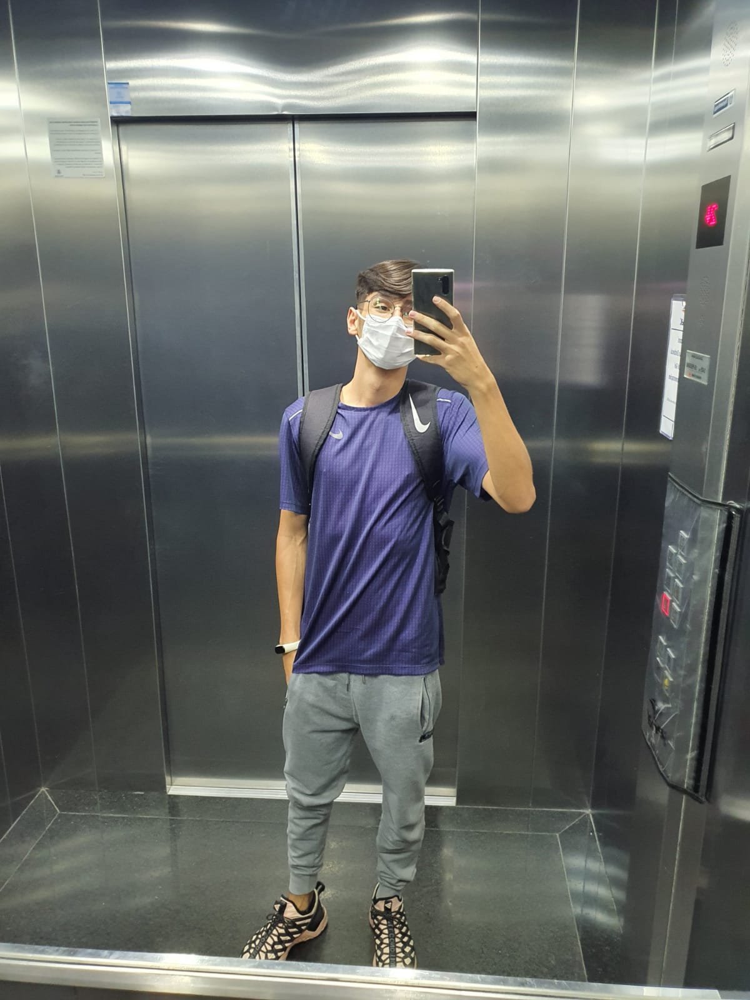
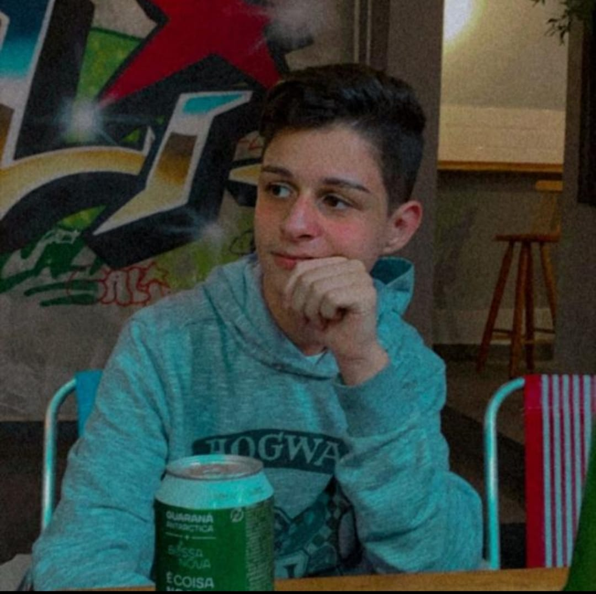
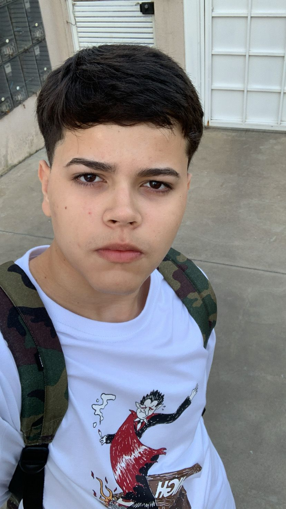

Grupo Clima
Tiago Tinoco / @uxtiago

Sarah Ferreira / @Saaf_ferreirasf
Vinicius Camargo / @vdilelio

Lavinia Oliveira / @laviniaa_oliver
Milena de Oliveira / @milena.obc
Giullia Braga / @giu_braga
Lucas Martins / @lucasss.n

Bonde do clima, o mais brabo da ZL